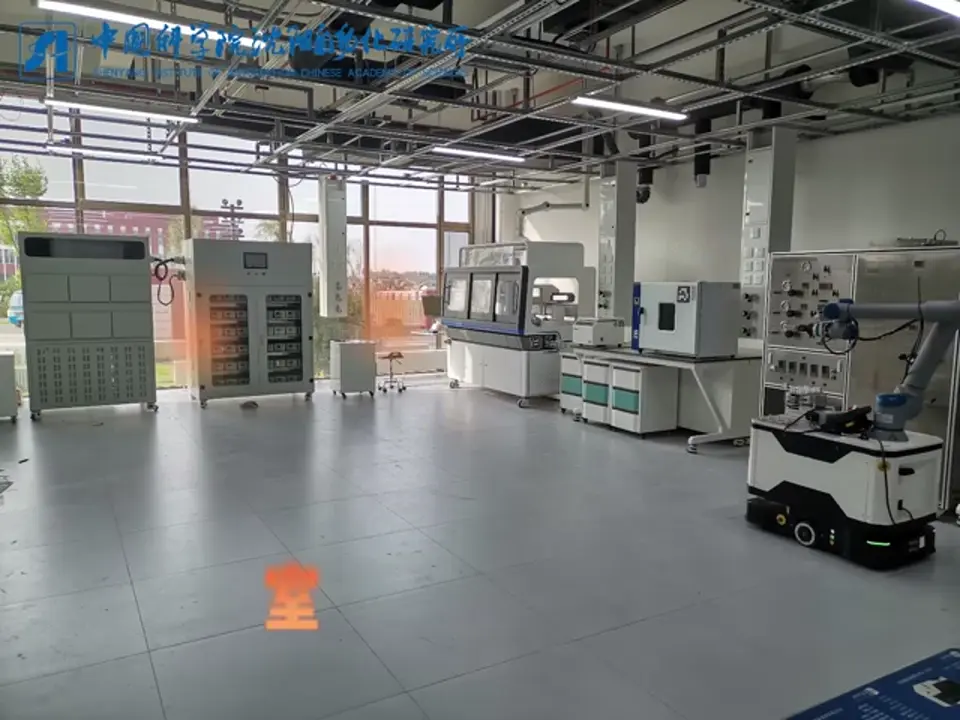
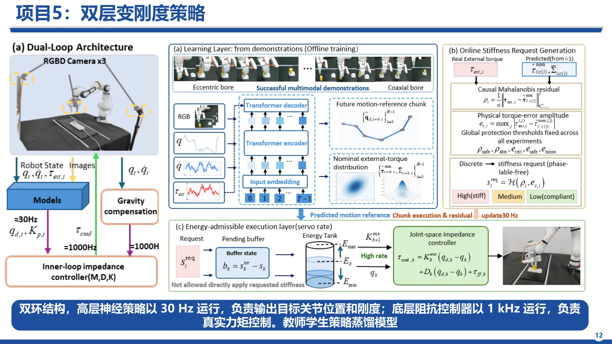

高层策略 · 30 Hz
结合多视角 RGB 图像、关节位置与速度、外部力矩等示范信息，预测未来运动参考片段和标称外力矩分布，为运动与刚度调节提供依据。
示范学习与策略推理运动控制、平台集成与真实实验，为技能学习提供可执行的底层能力。

自研七自由度机械臂、无人实验室、医疗机器人和双臂平台；工作覆盖运动规划、动力学辨识、柔顺／阻抗控制，以及视觉、力觉和触觉等多模态感知的系统集成。
连接人类示范采集、模型训练与验证、真实机器人部署、交互反馈和性能评估，形成持续迭代的实验流程。
对应项目与个人贡献灵巧操作与技能学习中的方法探索：将高层神经策略与高频阻抗控制连接起来，兼顾动作生成与接触柔顺性。

结合多视角 RGB 图像、关节位置与速度、外部力矩等示范信息，预测未来运动参考片段和标称外力矩分布，为运动与刚度调节提供依据。
示范学习与策略推理比较实际外部力矩与预测分布，以因果马氏残差和力矩误差幅值生成高、中、低刚度请求；请求经过执行层处理后才作用于控制器。
接触状态驱动的柔顺调节关节空间阻抗控制器执行真实力矩控制，结合重力补偿；待执行缓冲与能量罐约束刚度更新，避免直接施加未经执行层处理的请求。
高频执行与能量约束将教师—学生策略蒸馏纳入技能学习路线，衔接示范学习与机器人端策略部署。
策略蒸馏探索实验背景（答辩材料第 11–13 页）：连接数据采集、模型开发、技能训练与部署，覆盖简单抓取、精密接触及长时序多阶段操作。平台技术路线包括 DP、ACT、DP3、π₀、π₀.₅；双层变刚度策略是其中面向接触交互的方法探索。
人提供运动先验，机器人产生环境交互反馈，外骨骼将反馈传回人体。

通过外骨骼关节感知、遥操作或视频获取运动先验；动力学与重力补偿支持零力交互。
肩部、腕部按姿态对齐求解，肘部采用对应映射；手部骨骼点映射到机械手动作。
将映射结果交给控制器执行，结合阻抗控制和多模态感知与环境交互。
观测交互力、力矩和视觉信息，生成外骨骼力反馈，闭合感知、决策、执行与反馈链路。
答辩材料中的六个探索分支，分属运动结构映射、物理交互感知与技能迁移。这些是研究与验证方向，尚不代表已完成的方法或通用能力。
把人体运动转成机器人可执行动作，处理人体与机器人关节结构、姿态和运动范围的差异。
动作映射探索
从手部关键点建立人手与不同机械手之间的对应，研究面向抓握任务的动作重定向。
动作映射探索
围绕透明物体开展感知与跟踪验证，为操作任务提供连续的物体状态观测。
感知验证
探索如何在空间和任务坐标下表示交互力，把力觉与物体运动、接触关系及任务约束关联起来。
物理交互感知探索
探索借助世界模型生成数据集；先确定任务中值得建模的物理状态，再研究这些状态如何随动作演化。
数据与建模探索
探索利用任务相关的几何结构和局部对称性，从少量演示实现新场景或不同形态间的技能泛化。
技能迁移探索
从“模仿动作”走向“理解交互”，寻找完成任务真正需要保留的物理规律。
先识别与技能相关的物理状态：任务约束、物体运动、交互力，以及它们之间的关联；再研究状态在动作作用下的演化。
研究不同具身之间是否存在共享的操作技能结构：以任务流形上的约束、运动与交互力为线索，探索行为一致的几何不变量和任务相关的局部对称性。
尝试在任务层对齐几何与物理关系，降低对原始关节动作对应的依赖，并在接触丰富操作中检验跨场景、跨形态迁移能力。